監督式微調 (SFT) 是準備 LLMs 進入實際應用中的關鍵步驟。隨著初始預訓練階段，LLM 學會預測序列中的下一個 token，SFT 使用精心挑選的指令和相對應答案來完善模型的能力。這個過程具有兩個主要目的是：它教導模型瞭解並遵循特定的聊天格式，從而將其轉化為會話代理人，並允許模型根據專門任務或特殊領域進行適應。
SFT 的重要性在於它能夠跨越模型之間的通用語言理解和實際應用之間的差距。透過將模型暴露於所需輸出-輸入模式的範例，SFT 會將 LLM 的行為調整以符合特定的目標，而這些目標可能涉及任務完成（例如摘要或翻譯）或領域專業知識（如醫療或法律知識）。這種tailored 方法不僅提高模型在預期領域的表現，也能夠改善其遵循指令和生成更加相關和一致的回應能力。
在本章中，我們將涵蓋以下主題：
- 建立高品質指令資料集
- 微調技術
- 實踐微調的實現
到本章結尾，您將能夠建立自己的指令資料集，並有效地微調 LLMs。
所有本章的程式碼範例都可以在 GitHub 上找到 https://github.com/PacktPublishing/LLM-Engineering。
建立指令資料集
在大多數情況下，建立提示資料集是微調過程中最困難的一部分。這是由於多個因素。許多用例可以與原始文字連結，但找到自然的指令和答案對應卻很少。這些原始文字需要轉換為包含指令和答案的格式。此外，資料的品質也非常重要。因此，這裡花了很多時間進行手動檢查和驗證個別樣本。這種小心的檢查幫助確保資料集是準確且有用於訓練模型。
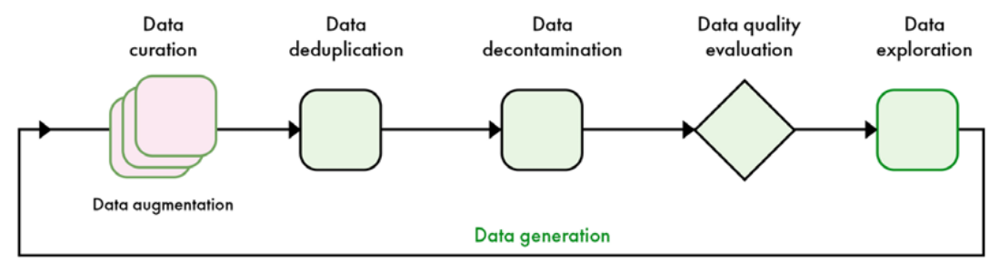
在這個部分，我們將介紹建立自己的指令資料集的總體架構，不管最終用途。我們接著會使用第三章中的 scraped 資料，並將其轉換為指令資料集。我們的資料生成管線各個階段被總結於 圖 5.1 中。
通用框架
資料集是由指令和答案組成的對。指令是模型的輸入，於微調時作為上下文使用。答案是模型預期的輸出。在微調中，您可以選擇訓練模型在指令和答案上或僅在答案上。指令和答案的 pairs遵循某個模板。一些指令模板，如 Alpaca，引入額外的欄位，如 inputs 和 system。這兩者都可以被視為 instruction 欄位的子欄位。在這種情況下，“inputs”包含模型需要完成指令的資料，而“system”則是模型總體行為的 meta-prompt。以下是 SlimOrca 資料集的一個例子，具有 “system” 和 “instruction”：
系統
你是一個有用的助手，總是提供解釋。你像回答五歲小孩一樣思考。
指令
概念：建築、商店、鎮
寫出包含這三個字的句子。
輸出
我們的小鎮裡有一間大樓內的店鋪，人們會去購買他們最喜歡的玩具和糖果。
這個範例展示瞭如何使用「system」欄位來定義模型特定的行為，例如幫助、總是提供解釋，並像對五歲小孩般tailoring 回應。 「instruction」欄位提供必要的資料（概念）和任務（構建句子）。output 欄位顯示預期答案，這個答案雖然不是唯一可能的答案，但代表高品質回應。
要建立指令資料集，我們想收集代表模型將被使用的樣本。當我們已經收集了足夠的樣本後，我們的目標是篩選出高品質的資料。在這種情況下，高品質資料可以透過三個主要維度描述：
- 準確性：它指的是樣本的實際正確性和相關性。在指令資料集的背景中，這意味著確保回應不僅是事實上正確的，也是相對於其相應提示的相關。高準確性對於培訓能夠提供可靠和可信任資訊的模型非常重要。
- 多樣性：高品質的資料集應該涵蓋廣泛的使用情況，包括可能遇到的LLM部署可能會遇到的查詢和任務。這種多樣性應該跨越主題、背景、文字長度和寫作風格。透過代表性的抽樣，我們允許模型發展堅實的指令遵循能力。
- 複雜性：簡單或過於簡單的樣本對LLM的能力無法產生實際影響。相反，資料集應該包含複雜的多步驟推理問題和挑戰任務，這些任務將模型的能力推到極限。
模型預期處理的內容。這種複雜性有助於開發能夠解決實際世界問題的模型。
以下章節中，我們將探討根據這些維度來篩選和評估指令樣本的技術。
資料量
Hugging Face Hub 內含了許多指令資料集，這些資料集可以是通用或專門設計為特定任務或領域。當處理新的使用情況時，尋找相關的開源資料集以便微調是非常有益的。這尤其重要，如果您的樣本數量太少（例如少於 1,000），需要將高品質資料新增到其中。
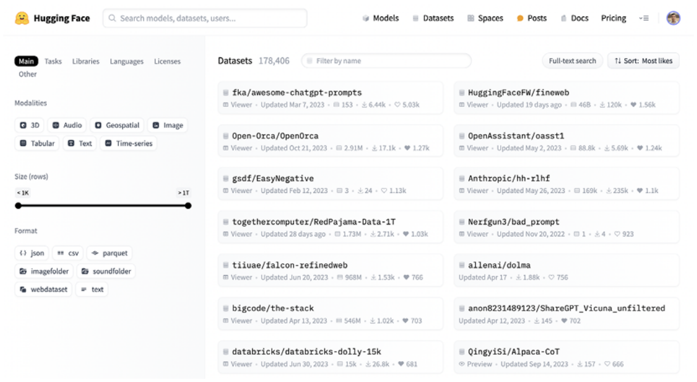
計算理想樣本數是一個困難的任務，因為資料的品質和模型的大小都可能會產生劇烈的影響。對於大型模型（例如70億引數），這個數字可以低至1,000高品質樣本（請見References部分中的LIMA論文）。這並不適用於較小的模型（例如7億引數），因為他們需要更多樣本才能學習正確的聊天範本。無論如何，資料的品質是一個關鍵因素，並且高數量的樣本總是可取的。
提供額外的資料，可以檢視由公司和開源社群開發的微調模型。可以區分兩種微調型別：一般用途，旨在複製像 GPT 這樣的模型的能力，並且是為特定的應用最佳化效能的模型。
一般用途模型涵蓋更多主題，需要額外的樣本。中間公司觀察到廣泛的值。例如，01-ai 的 Yi 模型僅使用少於 10,000 樣本。在相反的範圍中，Meta 報告使用了 10 百萬樣本進行 Llama 3 的整個微調過程（包括偏好對齊）。在開源社群中，模型如 OpenHermes 和 Dolphin 使用大約一百萬樣本。根據這些微調的品質，我們建議使用至少一百萬樣本來建立一個良好的一般用途指導模型。反之，微調為特定目的的模型需要較少樣本。
任務專門和領域專門模型是兩種不同的微調LLMs方法。任務專門模型旨在優秀於特定的功能，例如翻譯、摘要或情感分析。這些模型從單一任務的集中訓練中受益，可以在較小的模型大小（通常少於8億引數）下實現高效效能。需要微調的資料通常更加可管理，範圍從100到10萬個樣本。這使得任務專門微調成為許多應用中資源有限的情況下的吸引選擇。
特殊領域模型則旨在使用特定的知識和對該領域的詞彙和語言模式進行微調。這些模型在醫療、法律、金融、電子商務、工程和旅遊等領域中非常有價值。特殊領域微調的資料需求可能會因為領域的複雜度和廣度而異。一些領域，如醫療或法律，可能需要與一般用途微調相同數量的資料，因為他們擁有龐大的技術文字庫。其他領域，如電子商務或旅遊，則可能需要較少的樣本，類似於任務特定的微調。
決定域專門模型的資料需求主要是該領域的「大小」（即其專業知識和詞彙的範圍）和模型在預訓練資料中的表現。原來的訓練資料中對某個領域有良好代表性可能需要較少的微調，而那些更加專門或未被充分代表的領域則需要更大的資料集。即使是開源LLMs，許多預訓練資料集仍然是封閉的，這樣需要進行有智慧的猜測以瞭解其組成（例如30%程式碼或20%數學）。
資料整理
當fine-tuning資料集的取得時，task-specific和domain-specific模型之間有所不同。對於task-specific模型，資料整理通常涉及從已有的資料集中收集相關任務的例子或建立新的資料集。這可能需要收集摘要模型的原始和摘要文字對或翻譯模型的不同語言句子。
Domain-specific 資料整理可能更加困難。它通常需要與專業領域的專家合作，收集和驗證相關的文字、研究論文、技術檔案和其他專業內容。在某些情況下，它可能涉及與擁有大型特殊資源庫的組織或機構合作。這些資料的品質和相關性非常重要，因為它們直接影響模型能否理解和生成目標領域的內容。
值得注意的是，少數提示已經出現為fine-tuning替代策略，尤其是在task-specific應用中。這種方法利用了大型、強大的模型的能力，提供幾個欲完成任務的例子在輸入提示中。雖然不是所有情況下都可以取代fine-tuning（例如當您想學習新的領域），少數提示可以是適應新任務的有效方法，而不需要額外的廣泛訓練。
實踐中，task-specific 和 domain-specific 模型之間的界線有時候會模糊。例如，一個微調為醫療診斷的模型可能被視為both task-specific（專注於診斷）和 domain-specific（專門在醫療知識上）。關鍵是理解微調過程的主要目標，並根據需要進行相應的方法。
現在的步驟是收集適合我們使用案例的資料集。下一步就是透過規則基礎過濾、資料複製、資料去汙染和資料品質評估來改善樣本的品質。
規則式過濾
規則式篩選是一種系統化的資料品質控制方法，依賴明確、事先定義的規則來評估和篩選資料樣本。這些規則通常是為瞭解決常見的品質問題而設計的，可以從簡單的檢查到更複雜的邏輯操作。規則式篩選的主要目的是維持高標準的資料品質，將不符合特定標準的樣本刪除。
長度篩選是一種簡單有效的規則基礎篩選技術。這種方法涉及設定可接受回應長度的門檻值。在資料集中，非常短的回應通常缺乏足夠的資訊以為有意義，而過於長的回應可能包含無關或冗贍的內容。需要注意的是，適合的長度門檻值可以根據具體任務和領域而異。例如，生成摘要的資料集可能具有較低的最大門檻值，而解釋的資料集則可能具有較高的門檻值。
關鍵字排除是一種強大的規則基礎過濾技術，它將注意力集中在樣本的內容而不是其結構。這種方法涉及建立一份關鍵字或短語列表，這些詞彙與低品質或不適合的內容相關，然後排除任何包含這些詞彙的樣本。關鍵字列表可以包括明顯的低品質指標，如粗言穢語或垃圾郵件相關詞彙，以及特定領域中的詞彙，這些詞彙可能表明無關或不相關的內容。例如，在一個專業寫作助手的資料集中，你可能排除包含非正式用語或不符預期tone和style的樣本。
格式檢查建議在包含結構化資料或遵循特定格式需求的資料集中使用。這種技術可以確保所有樣本都符合預期的格式，保持一致性，並 facilitiate下游處理。格式檢查對於包含程式碼樣本、JSON結構或其他格式化文字的資料集尤其重要。例如，在一個程式指令和解決方案的資料集中，您可能實現規則來驗證程式碼樣本是否是語法正確，並遵循指定的風格指南。
基於規則的篩選在準備教學資料集方面具有顯著優點。其速度和效率使其可以快速應用於大量資料，使其高度可擴充套件。規則的一致性確保了資料的 uniform treatment，減少人為錯誤和偏見。此外，篩選標準的明確定義提供了透明度和解釋性， facilates easy understanding, auditing and adjustment。自動化基於規則的篩選減少了需要人工幹預的需求，並且可以實現持續資料品質監控。
然而，基於規則的篩選也存在一些限制需要考慮。預先定義的規則可能缺乏捕捉語言和上下文完整性所需的細微度，從而導致了有效但不尋常樣本的刪除。通常的規則（透過/失敗）可能不總是與語言和教學品質的微妙性相符。此外，隨著資料模式和品質標準演進，規則需要定期檢查和更新以保持有效。還有可能的是，poorly designed rules could inadvertently introduce or amplify biases in the dataset.
資料去重
資料集多樣性是訓練模型能夠泛化到新、未知資料的基本要素。當資料集中包含重複或近似重複的例子時，它可能會導致以下問題：
- 過度擬合：模型可能會記憶特定的例子，而不是學習一般模式。
- 偏向表現：過代表的資料點可能會將模型的表現傾向於某些型別的輸入。
- 不必要的資料可以增加訓練時間，但不提供額外有用的資訊。
- 評估指標膨脹：測試集中的重複資料可能導致過於樂觀的效能預測。
以消除資料集中的重複樣本，我們區分了 exact 和 fuzzy 的 deduplication。Exact deduplication 是透過簡單的過程，包括資料 normalization、hash生成和刪除 duplicate，來移除相同的樣本。資料 normalization 標準化了 entries 的格式，例如將文字轉換為小寫。Hash generation 然後建立每個 entry 的唯一 hashes 使用演演算法如 MD5 或 SHA-256。這些 hashes 比較以找到匹配，刪除重複樣本，留下每個樣本的唯一例項。雖然對於相同的 entries efective，但 exact deduplication 不能偵測近似 duplicate 或 semantics 類似的內容，需要更進階的技術來處理這些情況。
最流行的 fuzzy deduplication 方法是 MinHash deduplication。相比其他 fuzzy 技術，它保持了高準確度同時大幅減少計算複雜度。MinHash 運作透過生成 compact representations，或者 signatures，對每個資料專案。這些 signatures 作為指紋捕捉資料的本質，而不是降低其維度。在實踐中，MinHash 將資料專案（例如文字檔案）轉換為 shingles 集合，應用多個 hash 函式於這些集合同選擇最小的 hash 值形成 signature 向量。這些 signatures 可以使用相似性測量如 Jaccard 相似度來高效地識別近似 duplicate。
除了 exact 和 fuzzy deduplication，semantic similarity 還有不同的方法，它們將 focus 在文字的意義上進行 deduplication。這種方法涉及將單詞或整個樣本轉換為向量表示使用自然語言處理技術。Word embedding 模型如 Word2Vec、GloVe 和 FastText 將單詞轉換為密集向量，捕捉 semantics 關係。
為了獲得更多上下文 aware 的表示，語言模型如 BERT、句子轉換器或交叉編碼器可以生成整個句子或檔案的嵌入向量。取得這些向量後，可以透過比較向量之間的相似性進行去重。常見的相似度衡量方法包括餘弦相似度或歐幾裡得距離。具有高相似度分數超過預先定義的門檻值的樣本可以被視為重複的樣本。在大型資料集中，聚類技術可能會應用於將相似的向量群組起來。方法如 K-means、DBSCAN 或階層聚類可以有效地組織向量空間，使得識別具有相同內涵的內容的群整合為可能。在每個群集中，可以保留代表樣本，而其他樣本則標記為重複的樣本。
資料去污染
資料去汙是確保訓練資料集不包含與評估或測試集中的樣本高度相似或相同的過程。這一步驟對於確保模型評估的品質和防止測試資料的過度適合或記憶非常重要。
資料集去汙使用資料重複刪除的技術。精確匹配可以用於刪除訓練樣本，如果它們與評估集中的樣本相同。這可以使用雜湊函式或直接字串比較來實現。接著，我們還可以使用近似副本偵測方法，識別並刪除訓練樣本，它們與評估樣本非常相似，即使它們不完全相同。這通常涉及技術如 MinHash 或基於 n-grams 或嵌入的相似分數計算。
一種簡單的資料去汙方法是，在資料去重化階段將評估集加入指令資料集中。在這種情況下，我們需要確保只刪除指令資料集中的一些樣本，這可以實現不同的方式（僅過濾第一個重複樣本、記錄評估樣本的索引等）。理想上，您可以自動在資料去重化階段中新增您的評估集，以完全自動化這個過程。這種方法特別有效，如果您需要多次遍歷自定義基準。
資料清潔的另一方面是篩選出可能來自評估資料的樣本。這可以涉及檢查相互重疊的短語、類似的句子結構或共同的後設資料。實踐者也可能使用 provenance tracking (追蹤資料來源)以識別並排除已知被用於評估集的特定來源。
資料品質評估
資料質評估是機器學習的一個重要方面，尤其是在 LLMs 中。該過程涉及對資料集進行多種特性評估，包括準確度、多樣性和複雜度。某些方面，如數學準確性，可以使用工具如 Python 直譯器輕鬆驗證，但評估主觀或開放式內容仍然是一個挑戰。
傳統的資料品質評估方法包括人工標注，這通常提供高準確率，但需要大量資源。為瞭解決可擴充套件性問題，已經發展了一些機器學習技術以自動化評估過程。這些方法包括使用LLMs 作為裁判、獎勵模型和 trained for quality prediction 的分類器。
LLM 作為法官策略涉及提示 LLMs 評估每個樣本的品質。這種方法因其靈活性和使用方便而變得非常流行，但它也存在一些挑戰。不同 LLMs 在不同的任務中表現出不同的水準，並且他們的評價通常與非專業人士的評價更加相符。在具體領域的資料集上，您可能想使用具體領域的模型，而不是更好的通用 LLMs。比較評估方法（例如「回答 A 是否比回答 B tốt？」）通常優於絕對分數方法（例如「將回答 A 評為 1 到 4」），儘管兩種方法都可以在充分的提示工程下使用。我們建議反覆嘗試不同的提示在代表性子集上，以手動驗證回應的品質。表 5.2 顯示了一個自定義的法官 LLM 提示。
指令
你是一個資料品質評估員。你的目的是評估一條指令和相對應的答案，判斷這個答案是否有效地解決給定的任務。
在您的評估中，您將提供詳細的反饋，包括答案的優點和缺點，並以 1 到 4 的分數進行評價。
評分為 1 表示答案非常糟糕且與指令無關。
評分為 2 表示答案不具幫助且忽略了指令的重要部分。
一個分數為 3 表示答案是有幫助的，但在相關性、準確性和深度方面仍需要改進。
一個分數為 4 表示答案是優秀的，完全解決了任務。
請提供您的評估方式：
反饋：（相關的優點和缺點）
分數：（1-4之間的數字）
LLM-as-a-judge 具有多種偏見。首先，它在比較評分中具有位置偏見，LLM 判官偏好第一個答案。這可以透過隨機排列答案 A 和 B 的順序來解決。此外，LLM 判官像人類一樣喜歡長答案。可以應用長度 normalize 技術以減少絕對評分的問題。最後，LLM 判官具有內部模型偏好，即他們偏好同家模型（例如 GPT-4o 與 GPT-4 和 GPT-4o mini）。這可以透過使用多個模型而不是單一模型來解決。
總的來說，以提高評估可靠性，策略如使用多個 LLM 作為陪審團可以減少偏見和改善一致性。同時，使用小型 LLM 的陪審團也可以減少成本增加準確性和減少內部模型偏好。對於特定的應用，如聊天機器人，建議 LLMS 判官和人類評估員之間的協議率高達 80%。簡單分級系統（具有少數次提示）和 task-specific 評估標準也被建議，以確保相關和可解釋的評估。
獎勵模型是將LLMs用於資料品質評估的另一個方法。"獎勵模型"這個詞來自人機反饋強化學習（RLHF，見第六章）。他們可以廣泛定義為模型，它們接收指令和答案對，並返回分數作為輸出。一般地，獎勵模型是透過在解碼器架構上新增線性頭來建立的，例如 Gemma 或 Llama。然後，它們被訓練以便用於這個特定的目的，使用 either強化學習或傳統微調。圖 5.3 顯示了 ArmoRM-Llama3-8B-v0.1 的架構，這個模型在 Llama 3 8B 模型上新增回歸和閘門層次，並輸出多個分數，以目標特定的維度，例如有用性、正確性、一致性、複雜度和verbosity。這樣可以實現對資料品質評估的更細微方法。
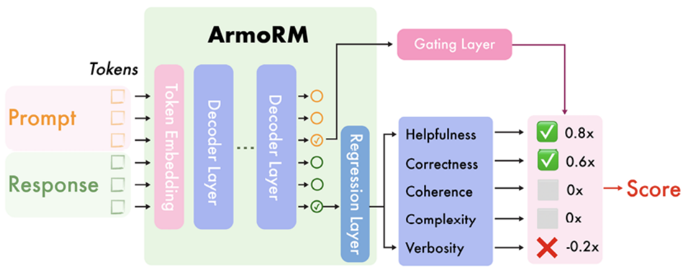
https://doi.org/10.48550/arXiv.2406.12845)
Allen Institute for AI 的獎勵板（allenai/reward-bench）在 Hugging Face 上，是評估不同獎勵模型的良好資源。它將不同的獎勵模型（生成式、分類器、DPO 等）結合起來，並對每個指令進行選擇和拒絕回答，以評估其效能。在這個任務中，這個資源並不直接相關於指令資料品質，但可以找到能夠區分良好和壞回答的模型。
資料品質評估可以使用分類器或 encoder-only 模型進行。一個好的例子是 HuggingFaceFW/fineweb-edu-classifier，該模型旨在判斷網頁的教育價值。這個模型被設計為預訓練資料的品質過濾器，但類似的方法可以應用於大規模評估教學樣本。在實踐中，fineweb-edu-classifier 將分類頭加到嵌入模型 (Snowflake/snowflake-arctic-embed-m) 中，並在 450,000 個樣本上進行 20 轉的訓練，這些樣本被 Llama 3 70B Instruct 訓練。
這種方法依賴於 Encoder-Only 模型，這些模型較小且適合分類任務。由於他們的低引數數量，這些模型可以更快速執行，並能夠擴充套件到數百萬個樣本。
然而，它們並不如大型模型那樣準確，特別是對於複雜推理任務，因為它們無法捕捉細微之處。在較小的尺度上，encoder-only 模型仍然有價值，可以用來過濾異常值或作為自動化資料管線的一部分，這需要更快速的處理。
資料探索
資料探勘是一個持續的過程，需要實踐者熟悉訓練資料。它涉及手動檢查和自動分析，每種都扮演理解資料集特徵、優點和可能缺陷的重要角色。
手動資料集探索，雖然耗時，但是一個重要步驟。它揭露了自動化過程可能會錯過的錯誤和不一致，包括格式問題、資料輸入錯誤、無邏輯推理和事實錯誤。這個過程提供了資料集內容和風格的質性見解。以提高效率，研究人員可以使用技術如分層抽樣（選擇多樣化樣本）、系統評審（使用標準檢查清單）和合作評審（涉及多位評審）。
圖 5.4 顯示了 Argilla，一個合作平臺，用於手動資料品質評估和探索。
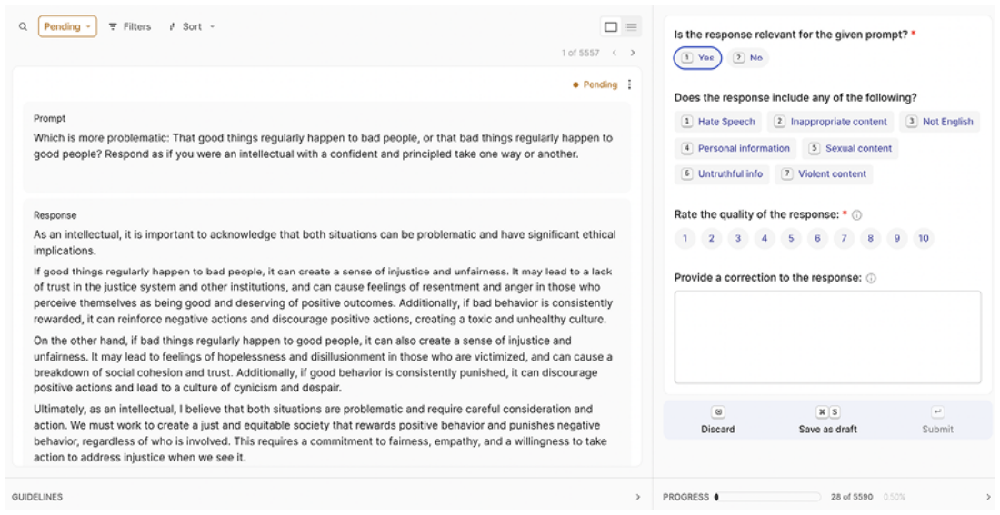
統計分析是一種補充技術，揭示詞彙多樣性、可能的偏見和概念表示。這個過程使用自然語言處理庫如 NLTK 或 spaCy 進行 tokenization 和大型文字卷數的分析。視覺化工具如 Matplotlib 或 Seaborn 創造直方圖和詞雲，實現直覺模式識別。這些技術提供了資料集組成、語言廣度和可能的文化或上下文偏好資訊，這些資訊可以影響模型輸出。
主題聚類自動將相似的檔案或文字片段分組，揭示資料中的隱藏主題和模式。這個過程尤其對於理解大型文字庫的內容、識別趨勢和組織資訊具有重要意義。它常與資料視覺化相關，通常伴隨著顯示相似樣本群集的圖表。
讓我們考慮建立一份關於多種程式語言的指令資料集。您已經收集了來自線上論壇、檔案和教程的大量程式相關文字。首先，主題聚類可以幫助識別資料集中存在的不同程式語言（Python、JavaScript等）。其次，
這樣就確保了每個主題對於每種程式語言都正確地被涵蓋。
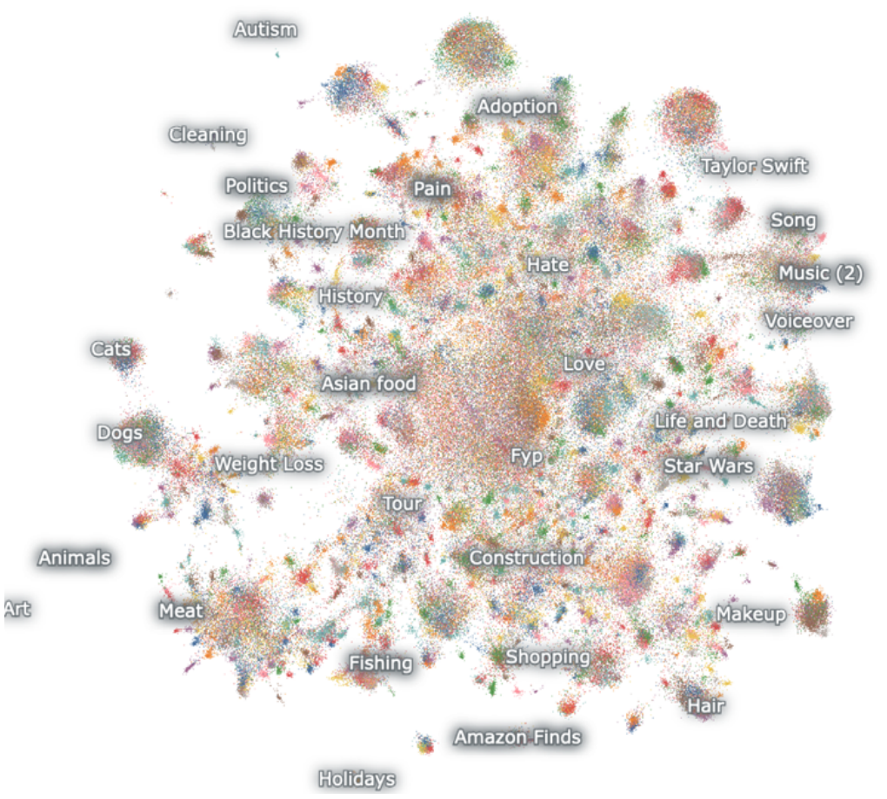
有多種工具可用於進行主題聚類，每個工具都有其優點和方法。例如，Hugging Face 的 text-clustering 提供了一個簡單的管線，使用句子轉換器將文字嵌入向量空間、UMAP 進行維度降低和 DBSCAN 進行聚類。此外，它還可以自動標籤聚類使用 LLM，並輸出視覺化結果。Nomic Atlas（見 圖 5.5）、BunkaTopics 和 Lilac 是一些提出相似方法的替代方案，具有額外功能。
資料生成
當可用的指令資料集不足時，建立自定義資料就變得必要。這在特殊應用中尤其重要，因為公開可用的資料非常稀少。
此外，它也是一種方法，用於增強資料集中的少見領域，如我們之前的例子中 JavaScript 錯誤處理技巧的不足範例。雖然資料可以透過個人或群眾募資手段生成，但這些方法通常需要花費大量時間和金額。使用 LLMs 生成synthetic data 提供了一個更加高效和可擴充套件的替代方案。這種方法，當與良好的 prompt 工程結合時，可以生產高品質資料於更大規模上，有效地解決了手動建立資料過程的限制。
synthetic data generation 的過程通常始於準備一組精心設計的提示（有時稱為 Taxonomy）。這些提示是生成新、多樣化範例的基礎。Alpaca 資料集中的五個原始 seed 提示可以在 表 5.3 中看到。synthetically generated data 的品質主要取決於生成過程中使用的提示和技術。良好的提示可以引導語言模型生產多樣化、相關和高品質的指令-回應對。這些提示通常包括特定的指令、範例和約束，以確保生成的資料符合所需的格式和內容。
種子指令
Is there anything I can eat for breakfast that doesn’t include eggs, yet includes protein, and has roughly 700-1000 calories?
What is the relation between the given pairs? Input: Night : Day :: Right : Left
Generate a one-sentence description for each of the following people. Input: -Barack Obama\n- Elon Musk\n- Taylor Swift
Describe a situation in which the given stereotype can harm you. Input: All Asians are smart!
Generate an appropriate subjective title for the following email: Input: “Hi [person name],\n\nI’m writing to ask you if you are happy to be a panelist in our workshop on multimodality at CVPR. The workshop will be held on June 20, 2023. \n\nBest,\n[my name]
許多合成資料生成管線都包含多個步驟以確保資料品質。這可能包括生成初始的問題或指令，然後生成相應的答案或回應。一些系統也實現驗證步驟，其中另一個模型或一組規則檢查生成的對於準確性、相關性和符合指定標準。
一個重要的合成資料生成方面是控制生成資料的多個屬性。這些因素包括指令的複雜度、回應的長度、使用語言的tone或style，以及涵蓋的特定主題或領域。透過微調這些引數，可以建立專門為某些訓練目標而設計的資料集，或者與現有資料集進行有針對性的補充。使用 Outlines 庫進行結構化生成也可以幫助遵循特定的格式。
此外，生成合成資料可以特別有助於解決現有的資料集中的偏見和空缺。透過精心設計生成過程，可以建立更加平衡和包容的資料集，這些資料集代表了更廣泛的角度、主題和語言風格。這樣可以幫助訓練LLMs，以便對於多元化使用者群體提供更公平和有能力的服務。
然而，生成的資料也存在挑戰之一是可能繼承自底層語言模型所產生的偏見或錯誤。為了緩和這個問題，許多方法都將人類監控、多樣化提示和額外過濾機制整合到生成的資料中，以確保其品質和適切性。
生成的資料需要足夠多樣和挑戰。如果synthetic data太簡單或重複，它可能不提供培訓強大LLM所需的複雜度。高階synthetic data generation技術通常集中於建立多變和微妙的指令-回應對，旨在推動模型學習的界限。
資料增強
在這個情況中，資料擴增（data augmentation）是指增加既有樣本數量和品質的過程。不同於資料生成（data generation），我們在這個階段使用預先存在的提示樣本作為輸入。在這個階段中，資料擴增主要用於提高既有樣本的品質，而不是增加樣本數量。具體來說，它主要關注兩個方面：多樣性和複雜度。
在這個領域中，一個開創性的方法是 Evol-Instruct 方法，它使用 LLMs-evolved simple instructions into more qualitative ones。演化後的指令可以用強大的 LLMs 生成答案。這個方法採用兩種主要策略：深入和廣度演化。
深入演化（In-depth evolving）主要是提高現有指令的複雜度，包括多種技術：
- 限制：它涉及引入原始指令中的額外需求或限制，使其更難滿足。
- 深入：它不會回答淺顯的問題，而是尋找更深入的問題，需要更全面的回應。
- Concretizing: 將一般概念替換為更加具體的概念，將指令中新增細節和精度。
- 增加推理步驟：它修改提示以明確要求多步推理，從而促進更複雜的問題解決。
- 複雜化輸入：這涉及將指令中新增更多複雜的資料格式或結構，如 XML、JSON 或程式碼片段。
在廣度演化方面，則旨在擴充套件指令資料集的多樣性。它生成完全新的指令，受到現有指令的啟發，並專注於創造同一領域中的少見或長尾範例。
作為具體實現的例子，深入演化可以自動化使用 AutoEvol論文中的以下提示。您只需要提供要演化的指令輸入，並且強大的模型像 GPT-4o 就會返回原始指令的更複雜版本。
您是一個 Instruction Rewriter，將給定的 #Instruction# 轉換為更加複雜的版本。請遵循以下步驟將 “#Instruction#” 轉換為更加複雜的版本。
Step 1: 請仔細閱讀 “#Instruction#” 之後，列出所有可能使這個指令更加複雜（讓知名 AI 助手，如 ChatGPT 和 GPT4 無法處理）的方法。請不要提供方法以便於未來的微調。
改變指令語言！
請根據步驟 1 中生成的 #Methods List# 建立一個全面的計畫，以使 #Instruction# 更加複雜。該計畫應包括多種方法從 #Methods List#。
第三步：逐步執行計畫，並提供#重新寫的指令#。#重新寫的指令#只能增加“#指令#”中的10到20個字。
請小心地檢查 #Rewritten Instruction# 和識別任何不合理的部分。確保 #Rewritten Instruction# 只是 #Instruction# 的更複雜版本。只提供以下內容。
#最終改寫指令#（不需任何解釋）。
請回應嚴格遵循以下格式：
步驟 1 #方法清單#：
步驟 2 #計畫#：
步驟 3 #重新寫的指令#:
Step 4 #最後重寫指令#:
#提示#:
{提示}
UltraFeedback 方法是另一個創新的方法，集中於回答品質而不是指令品質。它使用 AI 反饋來提高模型回應的品質和多樣性。與 Evol-Instruct 不同的是，它使用大型多樣化的指令集和模型生成廣泛的回應。
它之後利用進階語言模型如 GPT-4，提供這些回應的詳細批評和數值分數，以跨多個維度，如遵循指令、真實性、誠實性和有用性。
根據這些想法，您可以創造自己的增強技巧，以建立一個更具挑戰性和多樣化的提示資料集。透過對現有提示和答案進行精進和演變，所得的資料集可以更好地訓練模型來處理複雜、多步驟任務，並在廣泛應用中提高效能。
建立我們自己的指令資料集
在這個部分，我們將根據第三章的爬蟲資料建立自己的指令資料集，以建立高品質的指令資料集，我們需要解決兩個主要問題：我們資料的非結構化性和我們可以爬蟲的文章數量有限。
這種無結構的性質是因為我們處理的是原始文字（文章），而不是指令和答案的對。以解決這個問題，我們將使用LLM進行轉換。具體來說，我們將使用組合backtranslation和重新phrasing。Backtranslation是提供預期答案作為輸出，並生成相應的指令。但是，使用一段文字像paragraph作為答案可能不總是適當。這就是我們想要重新phrasing原始文字以確保我們輸出的答案正確格式高品質的原因。此外，我們可以要求模型遵循作者的寫作風格，以保持與原paragraph相近。雖然這個過程涉及廣泛的prompt工程，但它可以自動化並在大規模上使用，如下面的實現中所見。
我們第二個問題是樣本數量的限制，這在實際應用中非常常見。我們可以取得的文章數量有限，從而限制了我們能夠建立的提示資料集大小。在這個例子中，越多樣本我們擁有，模型就越能夠模仿原始作者。為瞭解決這個問題，我們將分割文章成塊，並對每個塊生成三個提示-答案對。這樣可以增加我們建立的樣本數量，而保持最終資料集的多樣性。為簡單起見，我們將使用 OpenAI 的 GPT-4o-mini 模型，但您也可以使用開源模型。
然而，LLMs 在生產結構化輸出時並不可靠，即使給定特定的模板或指令，也無法確保模型一致地遵循這些指令。這種不一致通常需要額外的字串解析以確保輸出符合期望格式。
以簡化這個過程並確保結果正確結構，可以使用結構生成技術。結構生成是一種有效方法，強迫LLM遵循預先定義的模板，例如JSON、pydantic類別或正規表示式。在以下，我們將使用OpenAI的JSON模式功能，這提供了一個更可靠的方式來返回有效的JSON物件，並減少了廣泛的後處理需求。
根據這個描述，這個圖表總結了我們想要建立的合成資料管線每一步驟。
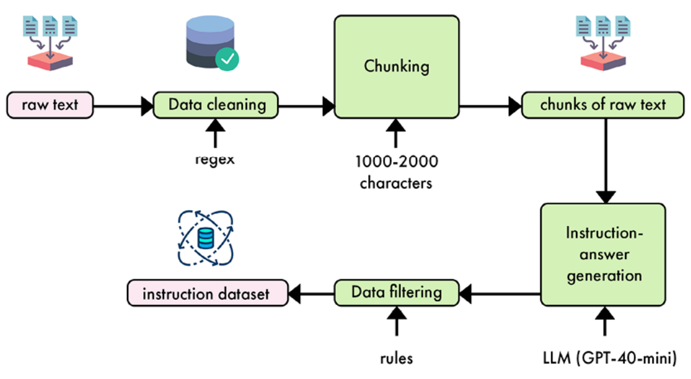
讓我們現在在 Python 中實現它：可以將其作為 LLMOps 管線的一部分，也可以作為獨立指令碼。
1. 我們需要確保以下庫已經安裝。OpenAI 庫將允許我們與模型進行互動，以生成指令資料，並將其格式化為 Hugging Face 相容的格式。tqdm 庫已經安裝，以便在資料生成過程中視覺化進度。
openai==1.37.1 datasets==2.20.0 tqdm==4.66.4
2. 我們如下匯入所有必要的程式庫。
import concurrent.futures import json import random import re from concurrent.futures import ThreadPoolExecutor from typing import List, Tuple from datasets import Dataset from openai import OpenAI from pydantic import BaseModel, Field from tqdm.auto import tqdm
3. 我們的原始資料是一個 JSON 檔案。從這個檔案中，我們使用 Hugging Face dataset 來提取每篇文章中的特定欄位：id、content、platform、author_id、author name和link。
def load_articles_from_json(file_path: str) -> Dataset:
with open(file_path, "r") as file:
data = json.load(file)
return Dataset.from_dict(
{
"id": [item["id"] for item in data["artifact_data"]],
"content": [item["content"] for item in data["artifact_data"]],
"platform": [item["platform"] for item in data["artifact_data"]],
"author_id": [item["author_id"] for item in data["artifact_data"]],
"author_full_name": [item["author_full_name"] for item in data["artifact_data"]],
"link": [item["link"] for item in data["artifact_data"]],
}
) 如果我們直接將資料集載入 pandas 資料框架，它將返回以下表格。
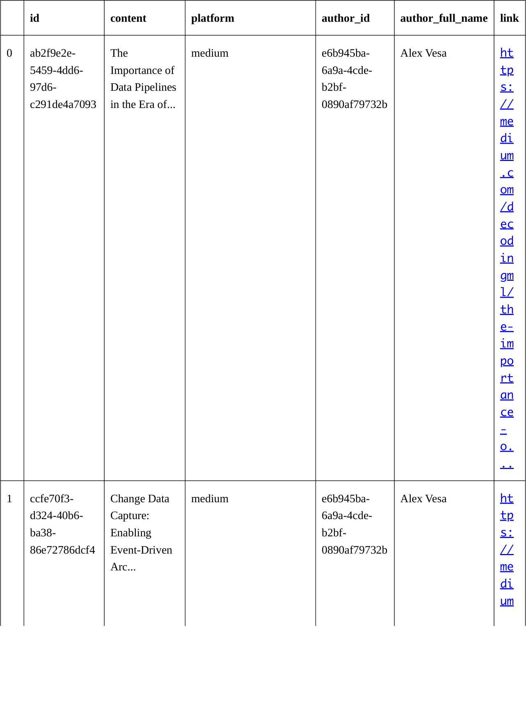
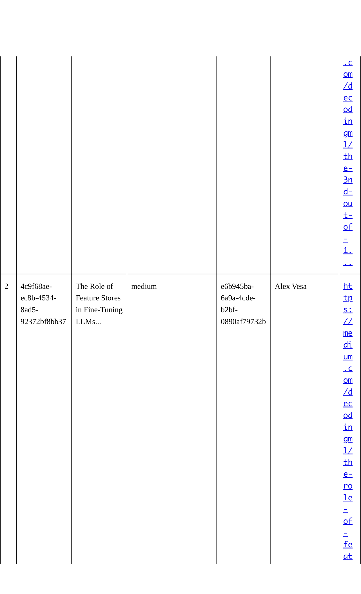
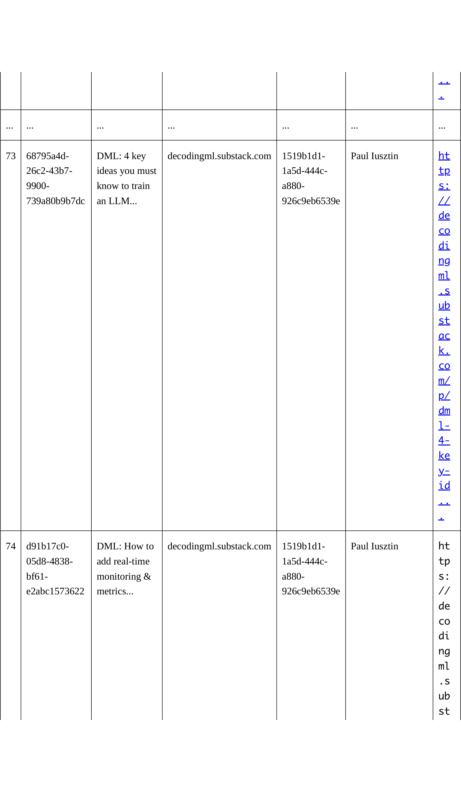
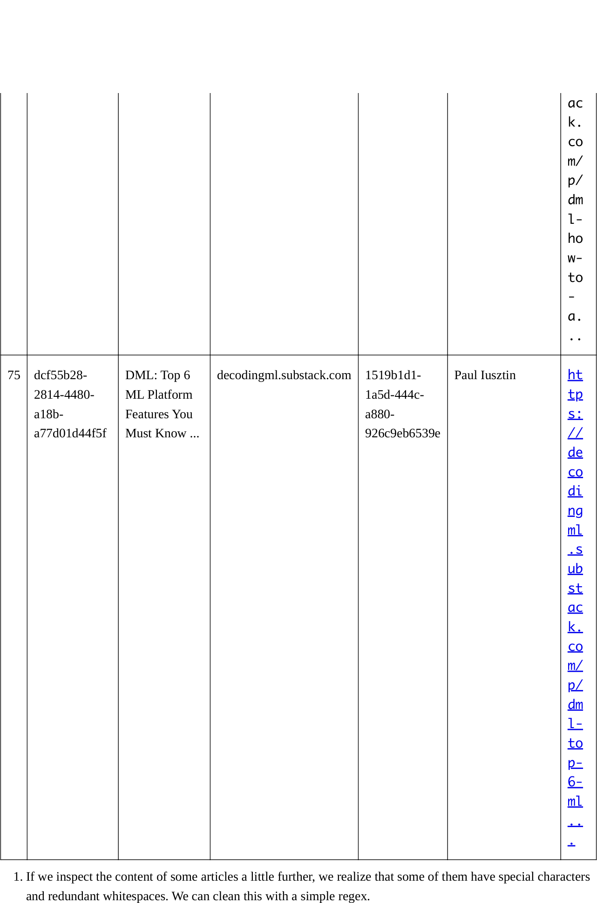
首先，我們使用 [^\w\s.,!?'] 去除非字母數字符，除了 Apostrophe、句點、逗號、感嘆號和問號。然後，我們使用 \s+ 將多個連續空白字元替換為單個空白字元。
最後，我們實現 strip() 去除任何前導或尾隨空白。
def clean_text(text):
text = re.sub(r"[^\w\s.,!?']", " ", text)
text = re.sub(r"\s+", " ", text)
return text.strip()
5. 現在我們可以載入文章後，需要將其分割成提示和答案的對。理想情況下，您應該使用標題或段落來產生語義上有意義的分割。
然而，在我們的例子中，就像在實際世界中一樣，原始資料通常是亂雜的。由於不正確的格式化，我們無法將每篇文章中的段落或標題提取出來。相反，我們將使用 regex 將句子分割成 1,000 到 2,000 個字元的塊，這個數字可以根據文字中資訊密度進行最佳化。
The extract_substrings 函式處理每篇文章在資料集中，首先清潔文字然後使用正規表示式將其拆分為句子。接著，它將這些句子串連成文字塊直到每個塊長度介於 1,000 到 2,000 個字元之間。
def extract_substrings(dataset: Dataset, min_length: int = 1000, max_length: int = 2000) -> List[s extracts = []
sentence_pattern = r"(?<!\w\.\w.)(?<![A-Z][a-z]\.)(?<=\.|\?|\!)\s" for article in dataset["content"]:
cleaned_article = clean_text(article)
sentences = re.split(sentence_pattern, cleaned_article)
current_chunk = "" for sentence in sentences:
sentence = sentence.strip()
if not sentence:
continue if len(current_chunk) + len(sentence) <= max_length:
current_chunk += sentence + " " else:
if len(current_chunk) >= min_length:
extracts.append(current_chunk.strip())
current_chunk = sentence + " " if len(current_chunk) >= min_length:
extracts.append(current_chunk.strip())
return extracts
6. 接下來，我們想要從提取的文字片段中建立指令-回答對。為了有效地管理這些對，引入 InstructionAnswerSet 類別。這個類別允許我們直接從 JSON 字串建立例項，這在解析 OpenAI API 的輸出時非常有用。
class InstructionAnswerSet:
def __init__(self, pairs: List[Tuple[str, str]]):
self.pairs = pairs
@classmethod d f f j ( l j t t ) 'I t ti A S t'def from_json(cls, json_str: str) -> 'InstructionAnswerSet':
data = json.loads(json_str)
pairs = [(pair['instruction'], pair['answer'])
for pair in data['instruction_answer_pairs']]
return cls(pairs)
def __iter__(self):
return iter(self.pairs)
現在我們已經擁有一組文章摘要，長度合理，可以使用 LLM 將其轉換為提示和答案對。請注意，這一步驟是模型中立的，可以使用任何開源或封閉源模型，因為這個輸出是基於我們提供的背景資訊，因此不需要複雜推理或高效能模型。
為了方便起見，我們將在這個例子中使用 GPT-4o mini。這個選擇是由於這個模型的低成本和良好效能。提示工程是這個資料轉換階段最重要的一部分，並需要進行多次反覆以生產預期的輸出。我們建議從簡單的提示開始，新增複雜性以提高準確性、修改風格或輸出多個回應。
我們的範例中，我們想要建立類似「關於 X 主題寫一段文章」的指令，以及相對應的答案，這些答案需要是事實性的，並且模仿作者的風格。為了提高效率，我們也選擇生成每個提取物五個指令-答案對。以下是我們用於指令生成的函式開始，包括我們的提示。
def generate_instruction_answer_pairs(
extract: str, client: OpenAI
) -> List[Tuple[str, str]]:
prompt = f"""Based on the following extract, generate five instruction-answer pairs. Each inst must ask to write about a specific topic contained in the context. each answer \ must provide a relevant paragraph based on the information found in the \ context. Only use concepts from the context to generate the instructions. \ Instructions must never explicitly mention a context, a system, a course, or an extract. \ Instructions must be self-contained and general. \ Answers must imitate the writing style of the context. \ Example instruction: Explain the concept of an LLM Twin. \ Example answer: An LLM Twin is essentially an AI character that mimics your writing style, persona It's designed to write just like you by incorporating these elements into a language model. \ The idea is to create a digital replica of your writing habits using advanced AI techniques. \ Provide your response in JSON format with the following structure: {{ "instruction_answer_pairs": [ {{"instruction": "...", "answer": "..."}}, ... ] }} Extract: {extract} """我們除了使用者提示外，也可以指定系統提示，以引導模型生成預期的指令。在這裡，我們重複了高階任務在系統提示中。
我們使用 OpenAI API，將系統和使用者提示的串聯資料以 JSON 模式傳遞給 GPT-4o 小模型，並設定回應的最大 token 數為 1,200。同時，我們也使用標準溫度 0.7。
completion = client.chat.completions.create(
model="gpt-4o-mini",
messages=[
{
"role": "system", "content": "You are a helpful assistant who \ generates instruction-answer pairs based on the given context. \ Provide your response in JSON format.",
},
{"role": "user", "content": prompt},
],
response_format={"type": "json_object"},
max_tokens=1200,
temperature=0.7,
)
# Parse the structured output result = InstructionAnswerSet.from_json(completion.choices[0].message.content)
# Convert to list of tuples return result.pairs
9. 讓我們建立一個主要函式以自動化過程。它從輸入資料集中提取子字串，然後使用 Python 的 ThreadPoolExecutor 並行處理來高效生成每個提取的提示-答案對。
我們使用預設的 max_workers 值為 4，因為較高的值可能會超過 OpenAI 的速率限制，導致 API 請求失敗或鎖定。
def create_instruction_dataset(
dataset: Dataset, client: OpenAI, num_workers: int = 4 ) -> Dataset:
extracts = extract_substrings(dataset)
instruction_answer_pairs = []
with concurrent.futures.ThreadPoolExecutor(max_workers=num_workers) as executor:
futures = [executor.submit(generate_instruction_answer_pairs, extract, client)
for extract in extracts
]
for future in tqdm(concurrent.futures.as_completed(futures), total=len(futures)
):
instruction_answer_pairs.extend(future.result())
instructions, answers = zip(*instruction_answer_pairs)
return Dataset.from_dict(
{"instruction": list(instructions), "output": list(answers)}
)
10. 我們可以呼叫這個函式來建立指令資料集。以 GPT-4o mini 在原始資料上執行此設定，成本低於 0.5 美元。
def main(dataset_id: str) -> Dataset:
client = OpenAI()
# 1. Load the raw data raw_dataset = load_articles_from_json("cleaned_documents.json")
i t("R d t t ")print("Raw dataset:")
print(raw_dataset.to_pandas())
# 2. Create instructiondataset instruction_dataset = create_instruction_dataset(raw_dataset, client)
print("Instruction dataset:")
print(instruction_dataset.to_pandas())
# 3. Train/test split and export filtered_dataset = instruction_dataset.train_test_split(test_size=0.1)
filtered_dataset.push_to_hub("mlabonne/llmtwin")
return filtered_dataset
Dataset({ features: ['instruction', 'output'], num_rows: 3335 })我們獲得了 3,335 pairs 這個過程中。您可以在 https://huggingface.co/datasets/mlabonne/llmtwin 找到我們的資料集版本。Hugging Face Hub 提供了一個便捷的資料集檢視器（見 圖 5.7），以探索指令和答案，並確保這些樣本中沒有明顯錯誤。由於資料集的大小很小，因此不需要進行綜合探索和主題聚類。
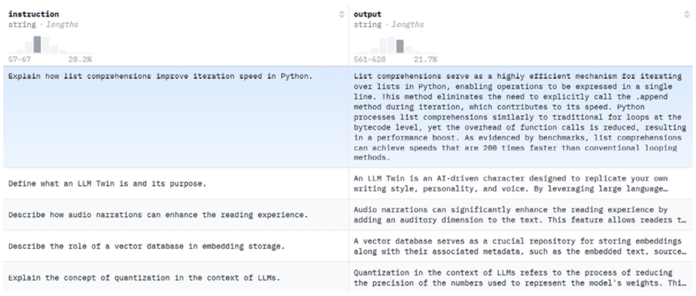
我們在前一節中已經看到，可以透過增加樣本的多樣性和複雜度來改進這個指令資料集。更進階的提示工程也可以提高生成資料的品質，例如提供預期結果的範例。最後，評估品質可以幫助篩選出低質數樣本，透過逐一檢查他們。為了簡潔和簡單，我們將保持這個指令資料集的直接方法，並在第六章中建立偏好資料集時探索更多進階方法。
在下一節中，我們將介紹微調技術，以及相關概念。
探索 SFT 及其技術
微調式訓練（SFT）是將預訓練模型在小型提示和答案對的資料集上重新訓練。微調的目的是將只能進行下一個 token 預測的基礎模型轉換為能夠回答問題和遵循指令的有用助手。微調也可以用於改善基礎模型的總體效能（通用微調）、灌輸新知識（例如、新語言、領域等）、集中於特定任務、採用特定的聲音等等。
在這個部分，我們將討論微調的使用情況，並探索與儲存格式和聊天範本相關的概念。最後，我們將介紹三種實現 SFT 的流行方法：全微調、LoRA 和量化 aware LoRA。
何時微調
在大多數情況下，建議先進行提示工程，而不是直接微調模型。提示工程可以與開放權重或封閉源模型搭配使用。透過少量示例提示或回傳增強生成（RAG）等技術，可以有效地解決許多問題，不需要監督式微調。提示工程也允許我們建立一個堅實的評估管線，衡量指標如準確率、成本和延遲。如果這些結果不符合要求，我們可以探索建立指令資料集的可能性，如前一節所示。如果有足夠的資料可用，微調就成為選項。
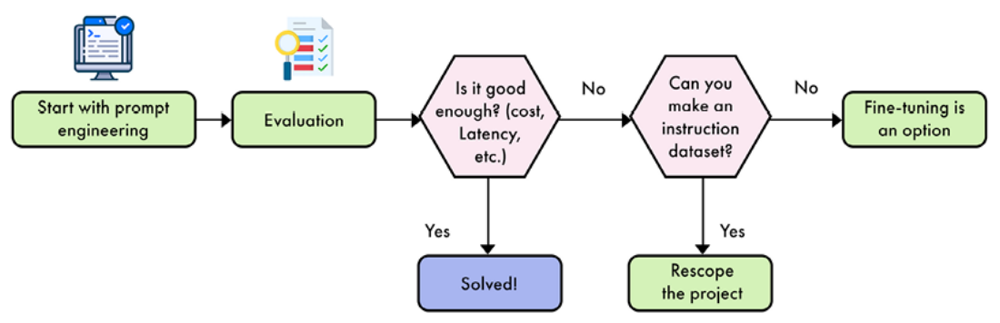
超過這些技術考慮之外，SFT回答了常見的控制需求（「瞭解資料」）和可定製性（微調後的模型是獨特的）。而不是在聊天機器人上建立應用程式，微調允許開發人員建立更多多樣化的互動方式，例如工具分析、監管和額外上下文。注意，如果我們集中於本書中的open-weight模型，幾個LLM提供商提供自動微調服務。雖然他們不提供與自己管理微調管線相同的控制和可定製性，但是在特定的情況下（例如機器學習工程師有限資源），這可以是一個有趣的權衡。
雖然這些優點，但微調也存在限制。通常理解SFT是基於預訓練模型權重中的既有知識，並將引數重新設定為特定的用途。這有幾個 implication。首先，已經學習在預訓練集中的知識，如果太遠離預訓練集的知識（例如未知或罕見語言），可能很難有效地學習。
甚至更糟的是，一個研究顯示，微調模型在新知識上可能導致更多的幻象。根據使用的監督式微調技術，我們也面臨著刪除基礎模型中存在的知識的風險（這是一種常見的問題，被稱為「災難性忘記」）。
指令資料集格式
提示資料集以特定的格式儲存，以組織提示和答案。通常，每個樣本在資料集中可以被表示為 Python 字典，其中鍵是提示型別，如 system , instruction , output , 值對應於實際文字。三種標準格式是 Alpaca、ShareGPT 和 OpenAI。以下表格顯示了這些資料格式的一般組織方式。
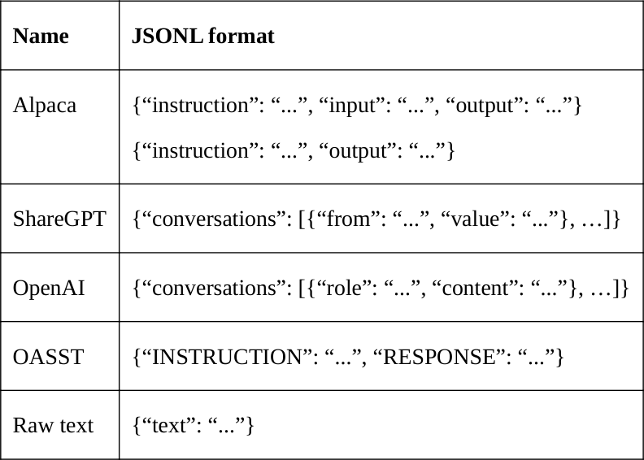
注意 Alpaca 中的「 input」鍵是可選的。 input 鍵內容僅在存在時才會附加到instruction 鍵內容中。我們還新增了 raw text 資料格式，以表明 SFT 不是預訓練的本質不同。如果您選擇在原始文字上重新訓練模型，這是一種常見的微調方式，稱為「持續預訓練」。
資料集我們在前一節中建立了兩個欄位（“ instruction ” 和 “ output ”），對應於 Alpaca 格式。Alpaca 對單回合指令和答案足夠，但它有限於一個指令和一個回答。如果您想要處理會話（多個指令和回答），像 ShareGPT 或 OpenAI 這些格式更適合。透過將每個訊息儲存在列表中的字典中，他們可以代表每個樣本中的任意長會話。
選擇單句和多句對話直接影響儲存型別，並取決於終端用例。
聊天範本
一旦從資料集格式中解析出指令-答案對，然後我們想將其結構化為聊天範本。聊天範本提供了一種統一的方式，以便將指令和答案呈現給模型。
一般來說，他們也包括特殊的 token，以識別訊息的開始和結束，或者訊息的作者。因為基礎模型並不設計以遵循指令，它們沒有聊天範本。這意味著您可以選擇任何範本進行微調。如果您想微調指導模型（不建議），您需要使用相同的範本否則可能會損害您的效能。
像指令資料集格式，還有不同的聊天範本：ChatML、Llama 3、Mistral 等等。在開源社群中，ChatML 範本（來自 OpenAI）是一個流行選擇。它只需新增兩個特殊 token (<|im_start|> and <|im_end|> ) 表示誰在說話。例如，我們將 ChatML 範本應用於表 5.1 中的指令-回答對。
<|im_start|>system You are a helpful assistant, who always provide explanation. Think like you are answering to a five <|im_start|>user Concepts: building, shop, town Write a sentence that includes all these words.<|im_end|> <|im_start|>assistant In our little town, there is a shop inside a big building where people go to buy their favorite toys
正如你所看到的，我們仍然有三個不同的部分：系統、使用者和助手。每個部分都以<|im_start|> token開頭，並以<|im_end|>.結尾。目前的發言人被識別為一個字串（例如“ system ")，而不是特殊token。這正是模型在微調期間所 tokenize 和使用的輸入。
然而，在推論中，我們無法提供預期的答案。在這種情況下，我們提供系統和使用者部分，如圖 5.6，並提示模型回答，新增<|im_start|>assistant\n。
因為模型已經被微調以使用這個聊天範本，因此它瞭解下一個 token 應該是根據系統提示和使用者指令相關的答案。這就是微調模型獲得遵循指令能力的方式。
聊天模板中的一個常見問題是每一個空白和換行都非常重要。新增或刪除任何字元將導致錯誤的 tokenization，從而對模型的效能產生負面影響。因此，建議使用可靠的模板，如 Jinja，實現在 Transformers 庫中。表 5.7 中展示了一些這樣的模板，包括 Alpaca，它既是指令資料集格式的名稱，也是一個聊天模板。
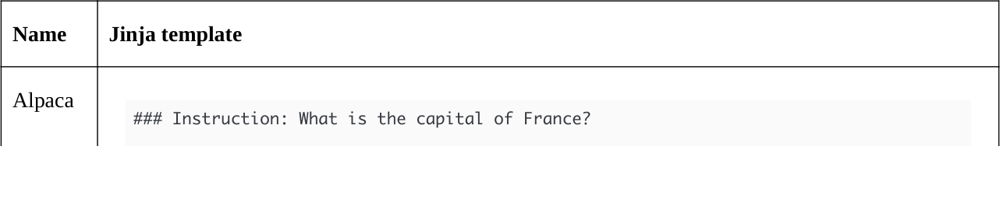
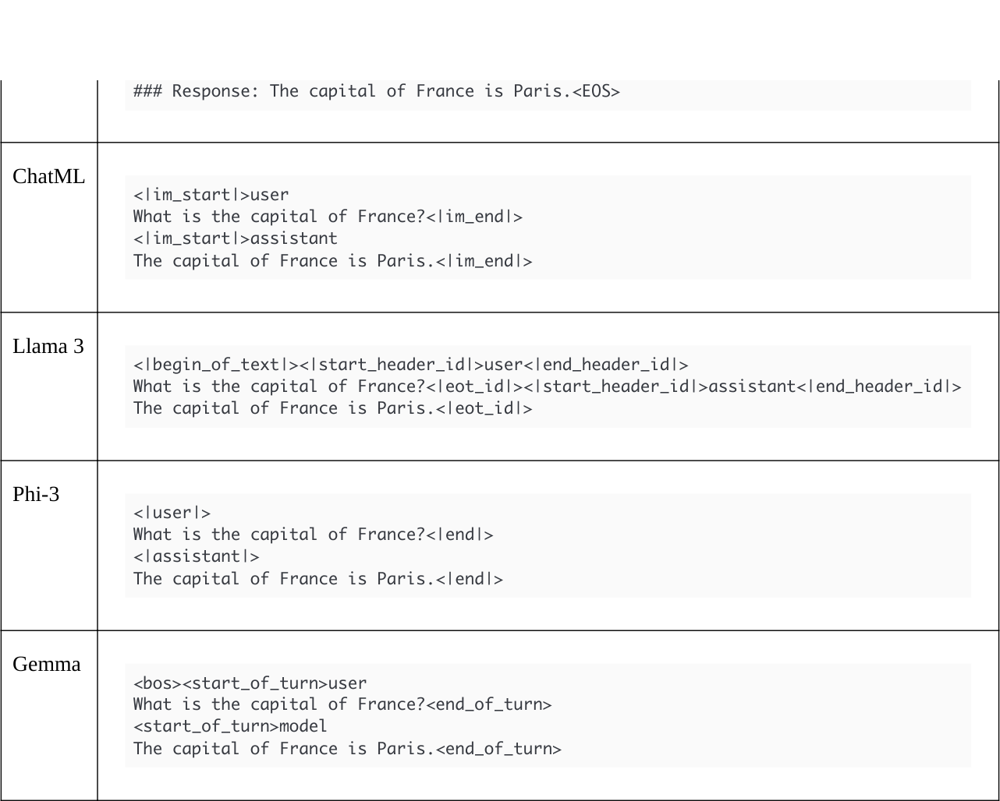
Jinja 實現了迴圈和條件，允許同一個模板在訓練和推論中使用（ add_generation_prompt）。
參數高效微調技術
雖然有許多技術存在於文獻中，但SFT已經集中在三種主要技術上：全精度微調、LoRA和QLoRA。我們將逐一介紹每種技術，並根據您的使用情況評估其優點和缺點。
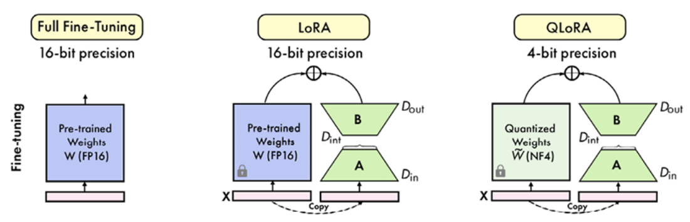
完整微調
完全微調指的是最直接的SFT技術，包括重新訓練基礎模型中的每個引數。像預訓練一樣,SFT 使用下一個 token 預測作為其訓練目標。這意味著之前討論的資料集結構可以被視為 continual pre-training 和完全微調之間的主要差異。
這種方法通常提供最好的結果，但需要大量的計算資源。記憶體使用量取決於多個因素，包括模型大小、訓練技巧和最佳化方法。在最簡單的情況下，使用單-GPU 設定，可以使用以下公式來估算所需的記憶體： VRAM = 4 * (batch size) * (model size / token)
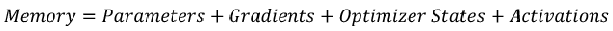
對於基本設定使用32位浮點數精度（fp32），我們可以估算：
- 引數：可學習的權重和偏移在神經網路中。 在大型語言模型中，這些通常是注意力機制、前饋層和嵌入層中的權重。成本：4 bytes/parameter（FP32）或 2 bytes/parameter（FP16/BF16）。
- 梯度：梯度是損失函式對每個模型引數的偏微分。它們表明每個引數應該如何調整以最小化損失。在訓練期間，透過反向傳播計算每個引數的梯度，並用於更新模型引數。成本：4 字元/引數。
- Optimizer states: Optimizer states 是 optimization algorithms like Adam 或 AdamW 中維護的額外值。這些通常包括每個引數的過去梯度和平方梯度的運算平均值。它們幫助每個引數適應學習率，並更好地探索損失景觀。例如，Adam maintain two additional values (momentum and variance) per parameter. Cost: 8 bytes/parameter (for Adam optimizer).
- 啟用函式：啟用函式是神經網路每個層次的中間輸出，在正向傳遞過程中。對於基於transformer模型，這包括注意力機制的輸出、前饋層的輸出等。
啟用函式需要在正向傳遞中保留，以便在反向傳遞中計算梯度，除非使用activation checkpointing等技術。成本：可變，但對於小批次大小通常可以忽略。
這給我們了一個16位元/引數的基礎。這對於7 B 模型和 70 B 模型分別需要112 GB 和 1,120 GB 的 VRAM。但是，這經常是一個低估，因為它不考慮額外需要的記憶體，例如啟用、暫存緩衝區和多種訓練技巧的過head。
可以使用幾種技術來減少 LLM 微調時的記憶體使用。模型並行將工作load分配到多個 GPU 中，但這增加了一些overhead。梯度累積使得更大的有效批次大小不需要相應的記憶體增加。8 位元 Adam 最佳化器可以減少最佳化器狀態的 footprint。啟用檢查點交易計算以換取記憶體，重新計算某些啟用。這些技術結合起來可以顯著降低記憶體使用量。例如，使用混合精度與模型並行可能將成本降低到 14-15 位元/引數，相比於16位元基礎。但是，即使使用了這些最佳化，大的模型仍然需要大量的記憶體。
此外，完全微調直接修改預訓練權重，這使其本質上是破壞性的。如果訓練不如預期，它可能會刪除之前的知識和技能 – 一種被稱為「災難性忘記」的現象。同樣的現象也可以發生於持續預訓練，通常使這些技術更加困難使用。由於這種額外複雜度和高計算需求，因此引數效率技巧經常被選擇以建立任務和領域特定的模型。
LoRA
LoRA 是一個引數高效的微調技術，適用於微調大型語言模型。為瞭解決微調巨大神經網路所帶來的計算挑戰，LoRA 已經成為 LLM 微調的基石技術。
LoRA 的主要目的是讓大型語言模型 (LLMs) 能夠在顯著減少計算資源的情況下進行微調。這是透過引入可訓練的低秩矩陣來修改模型行為而不改變原始引數。LoRA 的主要優點包括：
- 訓練過程中記憶體使用量大幅減少
- 微調過程加速
- 預訓練模型權重不被破壞（非毀滅性）
- LoRA權重之間快速切換的能力
這些優點使LoRA對於有限計算資源的研究人員和開發者而言非常吸引人，實際上將LLM微調的過程民主化。
LoRA核心技術是低秩分解法，以高效更新模型權重。相反於通常的更新方法，它使用 LoRA weights 的低秩表示來更新模型權重。
直接修改原始權重矩陣
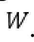
，LoRA 引入兩個較小的矩陣 和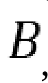
，這兩者共同形成對 的低秩更新。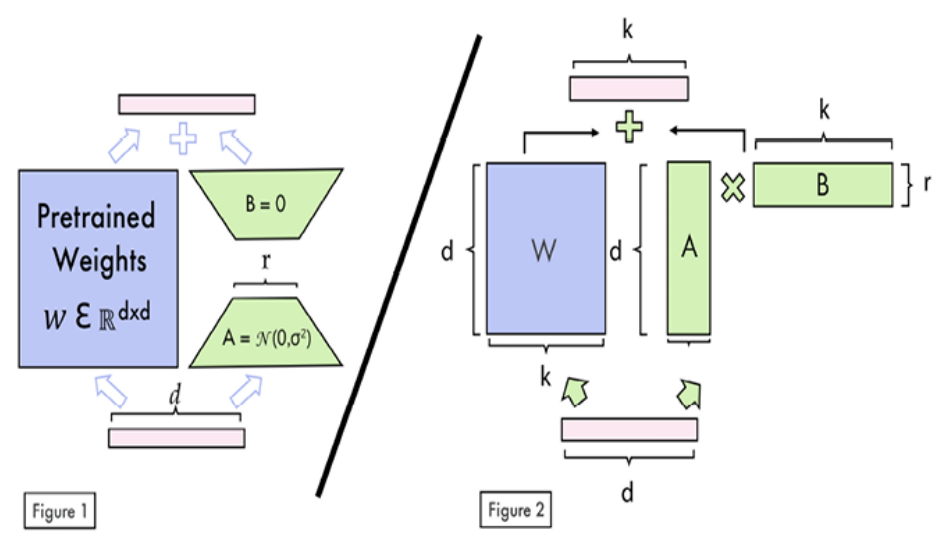
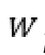
凍結數學上，這可以被表示為：
LoRA 中， 是原始權重矩陣， 和 是 LoRA 矩陣，而 是推論期間使用的有效權重矩陣。
矩陣 A 和 B 的維度被選擇，以便他們的積具有相同形狀 ，但其大小遠小於。
低rank。這個rank，通常以表示，是LoRA中的重要超引數。在訓練期間，原始權重將被分配到這個rank中。
權重保持不變，而僅和進行更新。這種方法可以大幅減少可訓練引數的數量，從而實現顯著的記憶體節省和加速訓練時間。
要有效地實現 LoRA，我們需要選擇正確的超引數和目標模組。LoRA 具有兩個超引數：
- Rank (
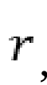
)：決定 LoRA 矩陣的大小。常見的起始點是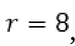
，但在某些情況下，值高達 256 也表現良好。較大的 Rank 可能捕捉更多多樣化任務，但可能導致過擬合。 - α（）：LoRA 更新因子。實際上，我們將固定的權重更新為一倍的 α。
因為
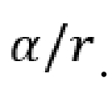
的因數，這是為什麼常見的 heuristics 是將設定為的兩倍，實際上對 LoRA 更新應用了2 的擴充套件因數。你可以在過度適合或不足時進行不同比率的實驗。在預防過度擬合時，可以新增 Dropout 層。Dropout 的率通常設定於 0 到 0.1 之間作為可選的正則化因子，這 slightely 減少了訓練速度。
LoRA 可以應用於模型架構的多個部分。 LoRA 最初主要是對注意力機制進行修改，特別是 transformer 層中的查詢矩陣（Q）和值矩陣（V）。然而，實驗已經表明了將 LoRA 的應用擴充套件到其他關鍵模型部件的優點。這些額外目標模組包括：
- 關鍵矩陣（K）在注意力層中
- 輸出投射層（通常以 O 表示）在注意力機制中
- 前饋神經網路（MLP）或多層感知器（MLP）模組之間的注意力層
- 線性輸出層
@TKn@ 然而，增加 LoRA-適應模組的數量也會增加可訓練引數的數量，並且因此增加記憶體需求。
使用 LoRA，可以在單一 GPU 上微調具有 7 億引數的模型，只需要 14-18 GB 的 VRAM，取決於具體配置。相比之下，完整微調通常需要多個高階 GPU。在可訓練引數方面，LoRA 巨大減少了對比完整微調。例如，即使將每個模組的 rank 設為 16，一個 Llama 3 8 B 模型只有 42 百萬可訓練 LoRA 引數中 8 億引數，這是模型引數的 0.5196%。
關於品質，LoRA也能夠取得與完全微調相似的或甚至更好的結果。多個LoRA權重集可以結合以應用於不同的任務或領域，從而實現可擴充套件的部署和任務切換不需要重新訓練。不同專案中有多個LoRA服務，如 LoRAX。這也是 Hugging Face 的文字生成推論 (TGI) 和 Nvidia 推論微服務 (NIM) 支援的功能。
QLoRA
由 Dettmers 等人引入，QLoRA 是一種方法，用於在小型、廣泛可用的 GPU 上微調 LLMs，以解決高計算成本的挑戰。透過結合量化技術與 LoRA，QLoRA 允許開發人員在小型 GPU 上微調模型。
QLoRA 的核心方法涉及將基礎模型引數量化為自定義的 4 位 NormalFloat (NF4) 資料型別，這明顯減少了記憶體使用量。像 LoRA 一樣，QLoRA 引入小、可訓練的低秩矩陣（adapter）到模型的特定層中。只有這些 adapter 在訓練期間被更新，而原始模型權重保持不變。為了進一步減少記憶體使用量，QLoRA 使用雙量化，它將量化常數本身量化。此外，它還使用 paged optimizers 管理訓練期間的記憶體脈衝，以利用 Nvidia 的統一記憶體功能。
QLoRA 相比 LoRA 提供了顯著的記憶體儲存，減少峰值 GPU 記憶體使用量高達 75%。例如，對於 7B 模型，QLoRA 在初始化期間將峰值記憶體使用量從 14 GB 減少到 9.1 GB，35% 的減少。在微調期間，這種記憶體儲存增加到 40%，從 LoRA 的 15.6 GB 到 QLoRA 的 9.3 GB。然而，這種記憶體效率來自於訓練時間的增加，QLoRA 相比 LoRA chậm約 30%。在模型效能方面，QLoRA 只有輕微的差異與 LoRA。
總的來說，QLoRA 在記憶體限制是主要考慮因素時非常有利，如在使用非常大型模型或具有有限 GPU 記憶體硬體時。但是，如果訓練速度是關鍵且有足夠的記憶體可用，LoRA 可能是首選。
決策是否使用 QLoRA 或 LoRA 需要根據專案的具體需求、可用的硬體和記憶體使用、訓練速度和模型效能之間的平衡。
訓練參數
當微調 LLM 時，幾個超引數將指導訓練過程，並對模型的收斂、泛化和總體效果產生顯著影響。
學習率和排程器
學習率是最重要的超引數。它控制了模型在訓練中更新其引數的程度。通常，它的值範圍從非常小的值如 1e-6 到較大的值如 1e-3 . transformer 模型的常見起始點通常在 1e-5 附近。如果學習率太低，訓練進度會很慢，並可能陷入次優解。反之，如果它太高，訓練可以變得不穩定或分岔，導致效能差劣。常常有益於對不同的學習率進行實驗，以找到適合您的特定任務和模型的最佳值。
學習率調整器在訓練過程中會根據需要調整學習率。通常，學習率會從較高的值開始，以便快速進行初始進度，然後在後期逐漸減少以精確地fine-tune模型。常見的兩種調整器是線性和cosine調整器。線性調整器會在時間上穩定地減少學習率，而cosine調整器則遵循cosine曲線，初始減速後逐漸加速到訓練結束。例如，您可能會從3e-4開始，然後將其減少到1e-7。在您的模型和資料集上，具體的值和衰退排程取決於您的選擇，但常見的方法是使用暖-up期（例如5%總步驟），在這個期限中學習率從0增加到初始值，然後在剩下的95%步驟中進行衰退。這種方法可以穩定早期訓練，並允許模型在收斂時進行更精確的更新。總之，線性和cosine調整器提供相同的效能水平。
批次大小
批次大小決定模型權重更新前處理的樣本數。LLM 微調常見的批次大小範圍從 1 到 32，常見值為 1、2、4、8 或 16。較大的批次大小通常導致更穩定的梯度估算，並且可以提高訓練速度，因為它們提供了整個資料集的真實梯度近似值。
然而，它們也需要更多記憶體，這可能會對 VRAM 小於的 GPU 造成限制。例如，在具有 24GB 記憶體的高階 GPU 上，批次大小為 16 可能會很好，而在只有 8 GB 記憶體的小型 GPU 上則只能處理批次大小為 2 或 4。
以克服記憶體限制同時仍從較大批次大小中獲益，可以使用名為 gradient accumulation 的技術。它的工作原理是執行多個前向和反向傳播操作，使用較小的 mini-batches，累積這些步驟中的梯度後才對模型引數進行單一更新。這種方法特別有用於處理大型模型或有限 GPU 記憶體的情況。例如，如果您想實現一個有效批次大小為 32，但您的 GPU 只能處理 8 個樣本，那麼可以將 gradient accumulation 的步驟設定為 4 這意味著您將處理 4 mini-batches，每個 mini-batch 都包含 8 個樣本，累積梯度，然後更新模型就像您曾經處理了所有 32 個樣本一樣。
梯度 accumulation 的步驟通常在 1 (無 accumulation) 到 8 或 16 之間，取決於所需的有效批次大小和可用的計算資源。當選擇步驟時，需要考慮
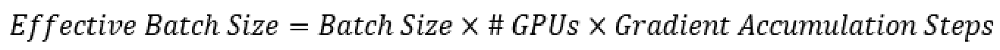
例如，如果您使用兩個 GPU，每個處理一個批次 4 個樣本，且進行 4 次梯度積累步驟，您的有效批次大小將是4 * 2 * 4 = 32個樣本。
最大長度和打包
最大序列長度決定模型可以處理的最長輸入。通常設定於 512 到 4,096 個 token 之間，但可能超過 128,000 或更多，取決於任務和可用的 GPU 記憶體。例如，語言生成任務中常見的最大長度為 2,048 個 token，而 RAG 應用可能使用到 8,192 個 token 或更多。在處理輸入資料時，序列長度超過這個限制將被截斷，即超出 token 被刪除。截斷可以發生在序列的開始（左截斷）或結尾（右截斷）中。例如，以最大長度為 1,024 個 token 的情況下，一個 1,500 個 token 的輸入將刪除 476 個 token。這個引數直接影響批次大小和記憶體使用量；一個批次大小為 12 的 max length 為 1,024 將包含 12,288 個 token（ 12 * 1,024 ），而同樣的批次大小與 max length 為 512 只將包含 6,144 個 token。需要平衡這個引數與 GPU 能力和訓練資料的性質以最佳化效能和資源利用。
Packing maximizes the utilization of each training batch。它不將單個樣本分配到每批次，而是將多個較小樣本組合成單個批次，從而增加每次迭代處理的資料量。例如，如果您的最大序列長度為 1,024 個 token，但許多樣本只有 200-300 個 token 長，那麼packing 可以讓您將 3-4 樣本塞入每個批次 slot 中。這種方法可以顯著提高訓練效率，尤其是在包含許多短序列的資料集中。但是，packing 需要小心實現，以確保模型注意力不跨越打包樣本。通常透過使用注意力遮罩來防止模型在同一個打包序列中的不同樣本之間進行注意。
Epoch 數量
epochs 的數量是另一個重要的引數，代表完整遍歷整個訓練資料集的次數。在 LLM 微調中，通常的範圍是 1 到 10 epochs，許多成功的執行使用 2 到 5 epochs。最佳的數量取決於任務複雜度、資料集大小和模型架構。更多的epochs 允許模型精化學習，潛在地改善效能。但是，有一個關鍵的平衡：太少的epochs 可能導致 underfitting，而太多則可能導致 overfitting。例如，一個大型模型在小資料集上微調可能只需要 1-3 epochs，而一個較小的模型在更大的資料集上微調可能從 5-10 epochs 中受益。監控訓練過程中的驗證效能並實施早期停止，如果模型的效能plateaus 或下降，這種方法可以動態地確定最佳的epochs 數量，並防止 overfitting。
最佳化器
最佳化器會根據損失函式調整模型的引數。對於LLM微調，AdamW（Adaptive Moment Estimation with Weight Decay）是非常推薦的，特別是它的 8 位版本。AdamW 8 位與 32 位版本相似，但使用更少的 GPU 記憶體（但並不改善訓練速度）。
AdamW 結合自適性學習率與權重衰減正規化，通常導致更好的訓練穩定性和模型效能。
對於嚴重記憶限制的情況，AdaFactor 提供了一種設計以提高記憶效率。它在無需明確學習率調整的情況下執行，特別適合資源受限的環境。但是，它可能不總是與 AdamW 的效能相匹配。在涉及到非常大型模型或有限 GPU 記憶的情況中，可以將 paged AdamW 8-bit 運用 CPU RAM，以進一步減少記憶消耗。如果有足夠的記憶且最高效能是優先考慮的話，非量化的 adamw_torch 最佳化器可能是最佳選擇。
權重衰減
權重衰減是將損失函式中對大權重的penalty加上，以鼓勵模型學習更簡單、更可-generalizable 的特徵。這樣可以幫助模型避免過度依賴任何單一輸入特徵，從而提高其在未知資料上的效能。通常，權重衰減的值範圍為 0.01 到 0.1，0.01 是一個常見的起始點。如果您正在使用 AdamW 最佳化器，您可能會將權重衰減設定為 0.01。
While weight decay 可能有益，但設定太高可能會阻礙學習，使模型難以捕捉資料中的重要模式。反之，設定太低可能不提供足夠的正規化。通常，最佳的weight decay值取決於特定的模型架構和資料集，因此實驗不同的值是良好的做法。
梯度檢查點
Gradient checkpointing 是一種技術，透過儲存前向傳遞中生成的中間啟用僅保留子集，以減少訓練期間的記憶體消耗。在標準訓練程式中，所有中間啟用都被保留在記憶體中，以便於反向傳遞中計算梯度。但是，對於像 LLMs 這樣非常深的網路，這種方法很快就會因為硬體限制而變得不實際，尤其是在具有有限記憶體容量的 GPU 上。
Gradient checkpointing 解決這個挑戰，選擇在網路中特定層次儲存啟用。對於不儲存啟用的層次，它們將在反向傳播過程中重新計算，以滿足梯度計算的需求。這種方法創造了計算時間和記憶體使用量之間的權衡。雖然它可以大幅減少記憶體需求，但可能增加整體計算時間，因為需要重新計算一些啟用。
其他引數和技術存在，但相對於之前討論的那些，扮演次要角色。在下一節，我們將探索如何選擇和微調這些引數，以一個具體範例為例。
微調實作
現在我們將微調一個開源模型，以適應我們的自定義資料集。在這個部分，我們將展示實現 LoRA 和 QLoRA 的效率示例，取決於您可用的硬體，您可以選擇最適合您的配置方法。
我們可以為特定的任務或領域使用多種高效率開源模型。要選擇最相關的 LLM，我們需要考慮三個主要引數：權重、批次大小和學習率。
- 許可證：某些模型的許可證僅允許非商業使用，這對於想要為公司微調模型是一個問題。自定許可證在這個領域中非常常見，可以針對特定的使用者數量進行目標，例如。
- 預算：具有較小引數大小 (<10 B) 的模型在微調和推論部署方面比更大型模型便宜得多。這是因為他們可以在 cheaper GPUs 上執行，並且每秒處理更多 token。
- 表現：在通用基準測試或更好的是，相關於最終應用案例的領域或任務特定基準測試上評估基本模型，這是非常重要的。這樣可以確保模型擁有必要的能力，能夠在微調後良好地執行預定的任務。
在本章中，我們將選擇 Meta 發布的 Llama 3.1 8B，該模型具有開放權重，並且有「Llama 3.1 Community License Agreement」允許商業使用。它的 8B 引數使其足夠小以在大多數 GPU 上執行，而效能也相對於競爭者高。我們可以透過 Open LLM Leaderboard 和其他在模型卡中詳細描述的基準測試驗證這一點。
有特殊的工具和庫可以微調模型。在特定情況下，我們建議以下幾個： [source] Hugging Face's Transformers library [source] Hugging Face 的 Transformers 庫 [source] Unsloth's TRL (Transformer-based Language Model) [source] Unsloth 的 TRL（基於 Transformer 的語言模型）
- TRL：這是一個由 Hugging Face 創立和維護的庫，用於使用 SFT 和偏好對齊訓練 LLM。它是最流行且可靠的庫，通常在演演算法方面保持最新，並能夠在單 GPU 和多 GPU 設定中執行 FSDP 和 DeepSpeed。
- Axolotl: Wing Lian 建立的這個工具可以將 LLMs 的微調流程簡化，使用可重複使用的 YAML 設定檔案。它基於 TRL，但包括了許多額外功能，例如自動合併不同格式的資料集。此外，它還支援單 GPU 和多 GPU 設定，使用 FSDP 和 DeepSpeed。
- Unsloth: 建立了由 Daniel 和 Michael Han Unsloth 使用自定義核心以加速訓練 (2-5x) 和減少記憶體使用量 (最高可達 80% 的減少)。它基於 TRL，並提供許多實用工具，例如自動將模型轉換為 GGUF 量化格式。在寫作時，它僅適用於單 GPU 設定。
為了提高效率，我們將使用 Unsloth 庫進行微調。以下程式碼是 LLMOps 管線的一部分，但也可以獨立執行。它還可以在不同的環境中執行，如 SageMaker、雲端 GPU（如 Lambda Labs 或 RunPod）、Google Colab 等等。我們已經測試過了不同型號的 GPU，包括 A40、A100 和 L4。
安裝 Unsloth 庫及其依賴項，我們建議直接從本書的 GitHub 倉庫（https://github.com/PacktPublishing/LLM-Engineering）或 Unsloth 的 repo（https://github.com/unslothai/unsloth）進行安裝。這種方法被推薦，因為安裝步驟經常更新，以解決可能與依賴項衝突的問題。
1. 首先，我們想訪問一個 gated 模型，並選擇將我們的微調模型上傳到 Hugging Face（https://huggingface.co/）。這需要登入帳戶。如果您沒有帳戶，可以建立它，並在 .env 檔案中儲存您的 API 金鑰（設定 |存取程式碼 | 建立新程式碼）：
HF_TOKEN = YOUR_API_KEY
2. 確保您的 Comet ML API 金鑰也在 `.env` 檔案中。
COMET_API_KEY = YOUR_API_KEY
3. 匯入所有必要的套件:
import os import torch from trl import SFTTrainer from datasets import load_dataset, concatenate_datasets from transformers import TrainingArguments, TextStreamerfrom unsloth import FastLanguageModel
4. 現在我們要載入微調模型及其對應的 Tokenizer。我們使用 Unsloth 的 FastLanguageModel 類別，伴隨著 .from_pretrained() 方法。此外，我們還需要指定模型名稱、最大序列長度（本例中為 2,048）。最後，load_in_4bit 引數指示是否要使用 QLoRA (量化預訓練權重) 或 LoRA。
我們將使用 LoRA 在這個例子中，因為它的訓練速度更快且品質更高，但如果您不滿足 VRAM 的需求，您可以輕鬆地切換到 QLoRA。
max_seq_length = 2048 model, tokenizer = FastLanguageModel.from_pretrained(
model_name="meta-llama/Meta-Llama-3.1-8B",
max_seq_length=max_seq_length,
load_in_4bit=False,
)
5. 現在模型已經載入，我們可以定義 LoRA 設定。在這裡，我們使用 32 的 rank，足夠模擬寫作風格和複製我們指令樣本的知識。如果您的結果不夠出色，您可以將其增加到 64 或 128。同時，我們設定 alpha 為 32，無 dropout 和無偏差，以加速訓練最後，我們鎖定每個線性層以最大化微調過程的品質。
model = FastLanguageModel.get_peft_model(
model,
r=32,
lora_alpha=32,
lora_dropout=0,
target_modules=["q_proj", "k_proj", "v_proj", "up_proj", "down_proj", "o_proj", "gate_proj )
6. 接下來，我們需要將資料正確格式化以進行微調。在這個例子中，我們沒有太多樣本在 llmtwin 資料集（3,000 樣本）。這是一個問題，因為模型可能不會正確學習聊天範本。為瞭解決這個問題，我們將使用高品質通用資料集 FineTome 進行 upsampling，這是arcee-ai/The-Tome using the fineweb-edu-classifier 的過濾版本。我們將指定在訓練分割中只使用 10,000 樣本，而不是 100,000 樣本。我們將這兩個資料集 concatenate 成我們的最後一組。
dataset1 = load_dataset("mlabonne/llmtwin")
dataset2 = load_dataset("mlabonne/FineTome-Alpaca-100k", split="train[:10000]")
dataset = concatenate_datasets([dataset1, dataset2])
7. 現在，我們需要使用聊天範本格式這些資料。讓我們使用 Alpaca 模板，以便更方便。這個模板不需要額外的 token，這使得它較不容易出錯（但可能會對效能產生輕微影響相比於 ChatML）。在這裡，我們將所有指令和答案對映到 Alpaca 模板。我們手動新增每個訊息末尾的句子結束符 (EOS) token，以確保模型學習輸出它。否則，它將繼續生成回答而從不停止。
alpaca_template = """Below is an instruction that describes a task. Write a response that app ### Instruction: {} ### Response: {}""" EOS_TOKEN = tokenizer.eos_token
dataset = dataset.map(format_samples, batched=True, remove_columns=dataset.column_names)
8. 一旦資料集準備好後，我們可以將其分為訓練（95%）和測試（5%）集合進行訓練時的驗證。
dataset = dataset.train_test_split(test_size=0.05)
9. 模型現在準備好進行訓練。SFTTrainer()類別儲存了我們的訓練 hyperparameters。另外，我們還提供模型、tokenizer、LoRA 設定和資料集。遵循前一節的建議，我們將學習率設定為 3e-4，並使用線性排程器，並將最大序列長度設定為 2048。我們對這個模型進行三個epochs的訓練，每批次大小為 2 和 8 條件積累步驟（實際批次大小為 16）。我們還選擇 adamw_8bit 最佳化器，且 weight_decay 為 0.01，取決於使用的 GPU，它將自動使用 FP16 或 BF16 來啟用。最後，我們將我們的訓練執行報告給 Comet ML 作為實驗追蹤。
trainer = SFTTrainer(
model=model,
tokenizer=tokenizer,
train_dataset=dataset["train"],
eval_dataset=dataset["test"],
dataset_text_field="text",
max_seq_length=max_seq_length,
dataset_num_proc=2,
packing=True,
args=TrainingArguments(
learning_rate=3e-4,
lr_scheduler_type="linear",
per_device_train_batch_size=2,
gradient_accumulation_steps=8,
num_train_epochs=3,
fp16=not is_bfloat16_supported(),
bf16=is_bfloat16_supported(),
logging_steps=1,
optim="adamw_8bit",
weight_decay=0.01,
warmup_steps=10,
output_dir="output",
report_to="comet_ml",
seed=0,
),
)
trainer.train()
訓練這個模型在我們concatenated 資料集上可能需要幾小時。例如，在A100 GPU上需要50分鐘。
完成後，我們可以使用快速範例進行測試。目的是不是正確評估微調模型，而是確保tokenizer或聊天範本中沒有明顯錯誤。
For fast inference, we can use Unsloth 的 FastLanguageModel.for_inference()。我們直接格式一個指令使用 Alpaca 格式。注意，我們提供一個空白答案以附加助手標題（ ### Response ）：在使用者指令的末尾。這樣強迫模型回答指令，而不是完成它。我們還使用文字流程器來流程生成，而不是等待它完成後再印出它。
FastLanguageModel.for_inference(model)
message = alpaca_prompt.format("Write a paragraph to introduce supervised fine-tuning.", "")
inputs = tokenizer([message], return_tensors="pt").to("cuda")
text_streamer = TextStreamer(tokenizer)
_ = model.generate(**inputs, streamer=text_streamer, max_new_tokens=256, use_cache=True)
11. 這是我們模型提供的答案。
Supervised fine-tuning is a method used to enhance a language model by providing it with a cu responses with human expectations, thereby improving its accuracy and relevance. The goal is t
這是正確的，並且正確地格式化了 Unsloth 的聊天範本。
12. 現在我們的模型已經成功微調，可以將其本地儲存或推送到 Hugging Face Hub 使用以下函式。
model.save_pretrained_merged("model", tokenizer, save_method="merged_16bit")
model.push_to_hub_merged("mlabonne/TwinLlama-3.1-8B", tokenizer, save_method="merged_16bit")
祝賀你從頭開始微調基本模型！在訓練期間，您可以訪問Comet ML以監控您的訓練損失、驗證損失和許多其他指標。您想要確保這些指標對應預期的值。 圖 5.11 顯示了之前程式碼對應的訓練執行在 Comet ML 中。
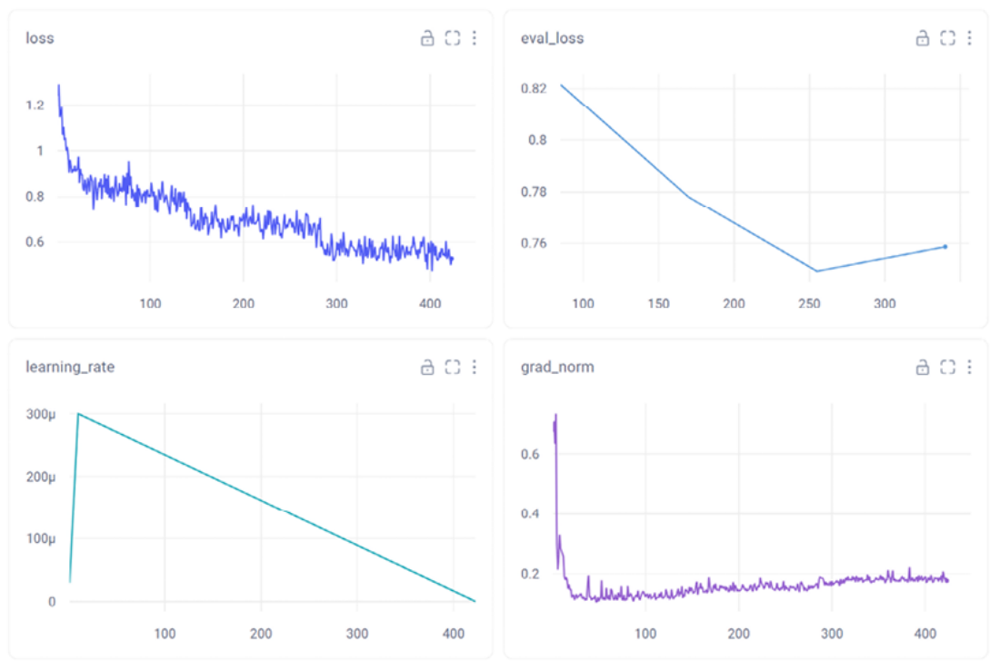
特別是，這三個指標很重要：
- 訓練損失：它衡量模型在被訓練的任務中表現的好壞。損失值應該持續下降，表示效能正在改善。我們預期在訓練開始時會有快速下降，後來長期保持平穩。如果損失值不斷增加或出現峰值，這可能是訓練失敗的跡象。在這種情況下，您可能需要檢查資料品質、tokenizer問題和學習率、批次大小等引數。圖 5.11 (loss) 中您可以看到三個相對應的階段，對應我們的三個epochs。
- Validation Loss: 使用驗證集測量損失，而不是訓練集；一個適合的模型通常在訓練和驗證損失都下降並最終穩定，之間的差距應該很小，但因為模型總是對訓練資料表現得更好，所以這個差距是可以存在的。如果訓練損失繼續下降，而驗證損失開始增加，那麼就是過擬合的跡象。反之，如果兩條曲線在相對高的損失值上保持平穩，那麼就表示欠擬合。在損失值方面，沒有通用的“建議範圍”，因為這取決於特定的問題和損失函式使用。但是，您應該尋找both曲線的收斂和穩定。在 圖 4.11（eval_loss）中，我們可以看到在步驟 340 的輕微增加，這仍然是可接受的，但可能表明模型開始過擬合。
- 梯度.norm：它表示在訓練過程中梯度向量的大小。大的梯度.norm可能表明訓練不穩定，尤其是如果伴隨著訓練損失和驗證損失之間的分歧。反之，如果梯度.norm穩定或下降，這通常意味著模型正在朝向區域性最優點收斂。為了緩解與大梯度.norm相關的問題，可以使用梯度截斷技術。這種方法涉及設定梯度.norm的最大閾值，從而限制引數更新的大小。
這是選擇最佳模型的常見方法之一：嘗試不同的學習率，並根據最小損失選擇模型。請注意，這只是一個代理評估，實際評估將在下一章中涵蓋。
摘要
本章涵蓋了LLM微調的基本面向，both in theory and practice。我們探討了指令資料管線和如何建立高品質的資料集，從收集到增強。每個管線階段都提供最佳化機會，尤其是在品質評估、資料生成和增強方面。此可擴充套件的管線可以根據您的用例選擇最相關的階段和技術。
我們將這個框架應用於Chapter 3中的實際資料中，以LLM將原始文字轉換為指令-回答對。然後，我們探討了SFT技術。這包括了SFT的優點和限制、使用聊天範本儲存和解析指令資料集的方法，以及LoRA和QLoRA三種主要SFT技術的概述。我們根據記憶體使用量、訓練效率和輸出品質進行了這些方法的比較。最後，章節結束於實際示例中，我們將Llama 3.1 8 B模型微調到我們自定義的指令資料集中。此示例突出了成功微調的關鍵步驟和實現細節。
在下一章中，我們將使用偏好對齊技術建立 TwinLlama-3.1-8B 的新版本。我們將生成一個選擇和拒絕的答案資料集，以幫助我們 calibrate 我們期望模型的回答型別。我們將詳細介紹這個架構可以如何應用於多種領域，並且如何實現它。
參考資料
- Tahori, Gulrajani, Zhang, Dubois, et al.. “Alpaca: A Strong, Replicable Instruction-Following Model”
crfm.stanford.edu, March 13, 2023, https://crfm.stanford.edu/2023/03/13/alpaca.html. - Subhabrata Mukherjee et al.. “Orca: Progressive Learning from Complex Explanation Traces of GPT-4.” arXiv preprint arXiv:2306.02707, June 2023.
- Wing Lian and Bleys Goodson and Eugene Pentland and Austin Cook and Chanvichet Vong and “Teknium”. “Open-Orca/OpenOrca.” huggingface.co, 2023, https://huggingface.co/datasets/Open-
Orca/OpenOrca. - Weihao Zeng et al.. “Automatic Instruction Evolving for Large Language Models.” arXiv preprint arXiv:2406.00770, June 2024.
- Chunting Zhou et al.. “LIMA: Less Is More for Alignment.” arXiv preprint arXiv:2305.11206, May 2023
- 01. AI. “Yi: Open Foundation Models by 01.AI.” arXiv preprint arXiv:2403.04652, March 2024.
- Alex Birch. “LLM finetuning memory requirements.”
blog.scottlogic.com, November 24, 2023, https://blog.scottlogic.com/2023/11/24/llm-mem.html. - Quentin Anthony et al.. “Transformer Math 101.” blog.eleuther.ai, April 18, 2023, https://blog.eleuther.ai/transformer-math/.
- Edward J. Hu et al.. “LoRA: Low-Rank Adaptation of Large Language Models.” arXiv preprint arXiv:2106.09685, June 2021.
- Tim Dettmers et al.. “QLoRA: Efficient Finetuning of Quantized LLMs.” arXiv preprint arXiv:2305.14314, May 2023.
加入本書的 Discord 空間
加入我們社群的 Discord 空間，與作者和其他讀者進行討論。
https://packt.link/llmeng